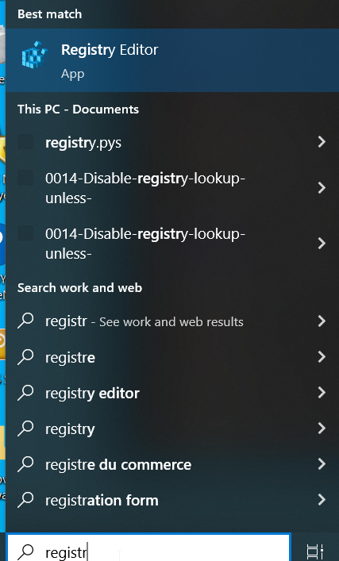
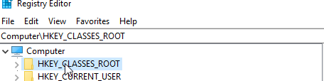
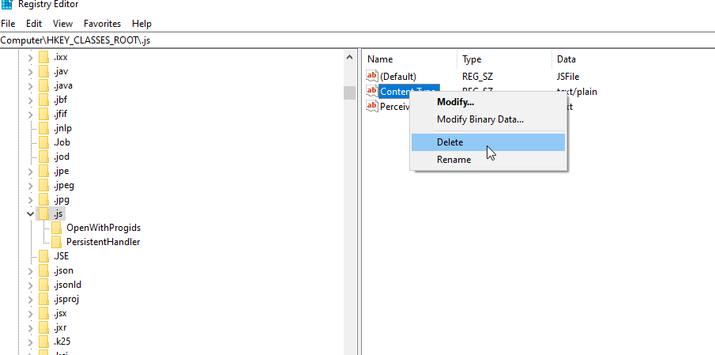

Deployment#
This section covers common issues that may occur during or after the desktop deployment of a solution application built with SAF.
See also
For the deployment procedure itself, see Desktop deployment. For issues that appear only on corporate machines with a proxy or TLS-inspecting firewall, see Corporate environment.
Blank page in solution UI#
- Problem:
The solution launches successfully, but the solution UI displays a blank white page instead of the expected interface.
- Cause:
This issue is typically caused by a missing or outdated
webview2runtime on Windows systems.- Solution:
Download and install the latest
webview2runtime from Microsoft’s official page.Restart the solution after installation.
If the issue persists, try running the solution as an administrator.
Tip
If reinstalling
webview2does not resolve the issue, check whether the.jsfile association in the Windows registry has been corrupted. See Blank page in SAF Portal or solution UI caused by a corrupted .js file association.
Blank page in SAF Portal or solution UI caused by a corrupted .js file association#
- Problem:
The SAF Portal or the solution UI displays a blank white page, even though the
webview2runtime is installed and up to date.- Cause:
SAF Portal and Dash-based solution UIs serve their JavaScript assets through Flask, which determines the
Content-Typeheader of each file using Python’s standardmimetypesmodule. On Windows,mimetypesreads file-extension associations from the registry, underHKEY_CLASSES_ROOT\<extension>.Some third-party applications modify the
Content-Typevalue underHKEY_CLASSES_ROOT\.jsas a side effect of their own installation, replacing the expected JavaScript MIME type with an incorrect one (for example,text/plain). When this happens, every.jsfile served by Flask is sent with the wrongContent-Typeheader. Browsers, including the Chromium engine used bywebview2, refuse to execute scripts served with a non-JavaScript MIME type, so the page loads with no functional JavaScript and appears blank.This is a Windows-wide registry issue, not specific to SAF. It can affect any application on the machine that relies on the registry to determine MIME types, and it can reoccur if another program overwrites the key again later.
- Solution:
Open Registry Editor: type
regeditin the Windows search bar and open the app.
Navigate to
Computer\HKEY_CLASSES_ROOT\.js.
Right-click the Content Type value under the
.jskey and select Delete.
Reboot the computer.
Launch the solution again. The Portal UI and solution UI should now render correctly.
Warning
Registry Editor lets you modify low-level Windows settings. Deleting the Content Type value under
.jsreverts that key to its default state and is safe, but avoid deleting the.jskey itself or modifying unrelated keys.Note
If a specific application is known to overwrite this key, consider reinstalling or updating that application, or contacting your IT administrator, to prevent the issue from recurring.
{kind=link}
{kind=link}
{kind=link}
Long file path issues#
- Problem:
The solution fails to install or run properly, potentially with errors related to file paths or missing files.
- Cause:
Windows has a default file path limitation of 260 characters. Solutions with deep directory structures or long file names may exceed this limit.
- Solution:
Enable long path support in Windows before installing the solution:
Method 1 (Group Policy Editor):
Press Win+R, type
gpedit.msc, and press Enter.Navigate to Computer Configuration > Administrative Templates > System > Filesystem.
Double-click Enable Win32 long paths.
Select Enabled and click OK.
Method 2 (Registry Editor):
Press Win+R, type
regedit, and press Enter.Navigate to
HKEY_LOCAL_MACHINE\SYSTEM\CurrentControlSet\Control\FileSystem.Set
LongPathsEnabledto1(create the DWORD if it doesn’t exist).
Restart your computer after making these changes.
Reinstall the solution if it was previously installed without long path support enabled.
Note
We strongly recommend that you enable long path support before installing any solution to prevent potential issues. This setting should be enabled by default on systems where solutions are to be deployed.
Bypass the Windows long path check#
If enabling the long path registry setting is not possible (for example, due to corporate group policy restrictions), you can bypass the long path prerequisite validation in the installer UI:
In the installer UI, deselect the Check Windows Long Path enabled checkbox.
A warning message is displayed, recommending that you install the solution at a short path.
Change the Installation Location to a short path, for example a disk root such as
C:\Folder_name, to reduce the total length of file paths used by the solution.Proceed with the installation as usual.
Warning
Bypassing the long path check increases the risk of installation or runtime failures caused by file path length
exceeding the Windows 260-character limit. Only bypass this check when the solution is installed at a short path.
Installing at the default location (C:\Program Files\ANSYS Inc\...) without long path support is
not recommended and may result in errors.
Solution documentation not accessible#
- Problem:
The solution launches correctly, but clicking the
Open Solution Documentationbutton shows a warning that documentation is not available.- Cause:
The solution was built without the
docdependency group installed, which is required for building and embedding the documentation.- Solution:
Ensure the
docdependency group is installed before building the solution:saf execute <solution-name> "poetry install --with doc"
Rebuild the solution using the
saf buildcommand.Reinstall the solution with the newly built installer that includes the documentation.
Permission errors during installation#
- Problem:
The installer fails with permission-related error messages.
- Cause:
The installation requires administrative privileges to write to system directories.
- Solution:
Right-click the installer executable and select Run as administrator.
Ensure you have administrative privileges on the target machine.
If installing on a corporate network, contact your IT administrator for assistance.
Solution fails to start after installation#
- Problem:
The solution appears to install successfully, but fails to launch when using the desktop shortcut or Start menu.
- Troubleshooting steps:
Try launching the solution from the command line (as described in Check installation) to see detailed error messages.
Verify that all prerequisites are met:
Administrative privileges were used during installation.
Long path support is enabled, or the solution was installed at a short path with the long path check bypassed (Windows).
The
WebView2runtime is installed (Windows).
Check if antivirus software is blocking the solution execution.
Ensure there is sufficient disk space in the installation directory.
If using
--exclude-pythonoption during build, verify that a compatible Python version is installed on the target machine.
Tip
If the machine is on a corporate network, check whether the HTTP_PROXY and HTTPS_PROXY
environment variables are set. A system-wide proxy configuration prevents the solution from starting and
produces no visible error message. See Desktop solution fails to start when a proxy is configured.
Solution execution issues with pythonw#
- Problem:
The solution fails to start properly, crashes unexpectedly, or exhibits unstable behavior during execution.
- Cause:
By default, the installer uses
pythonwto run the solution, which hides the console window. However,pythonwcan sometimes be less stable and may cause execution issues.- Solution:
The SAF Team is actively working on enhancing the
pythonwexperience, but for now, it is recommended to build the installer with the--display-console-windowoption for more robust execution:Rebuild the installer using the
--display-console-windowoption:saf build <solution-name> --display-console-window
This option forces the installer to use
pythoninstead ofpythonw, which is more stable and reliable.Note
This displays a console window when the solution runs, but it provides better stability and makes debugging easier.
Reinstall the solution using the newly built installer.
Tip
During development and testing phases, we strongly recommend that you always use the
--display-console-windowoption to ensure stable execution and easier troubleshooting. Once the solution is thoroughly tested and stable, you can optionally create a version without this flag for end users if a hidden console window is preferred.
Shortcut target appears to be truncated#
- Problem:
The desktop shortcut for the solution has a target path that appears to be truncated or incomplete.
- Cause:
The path to the solution plus the arguments exceeds the maximum character limit for shortcut targets on Windows (typically 260 characters). This UI limitation is separate from the long file path issues discussed earlier in this document.
- Solution:
This issue is purely a UI limitation imposed by Windows and does not affect the functionality of the solution. You can verify the complete command by checking the full command executed using a process explorer tool.
The following is the expected full target command executed by the shortcut, which you can use to verify or run manually if needed:
"C:\Program Files\ANSYS Inc\SAF Solutions\<solution-display-name> Solution\<version>\definitions\<solution-name>\.venv\Scripts\pythonw.exe" -m ansys.saf.desktop.orchestrator --solution-main-module-name ansys.solutions.<solution-name>.main --portal --env-file "C:\Program Files\ANSYS Inc\SAF Solutions\<solution-display-name> Solution\<version>\definitions\<solution-name>\.env"